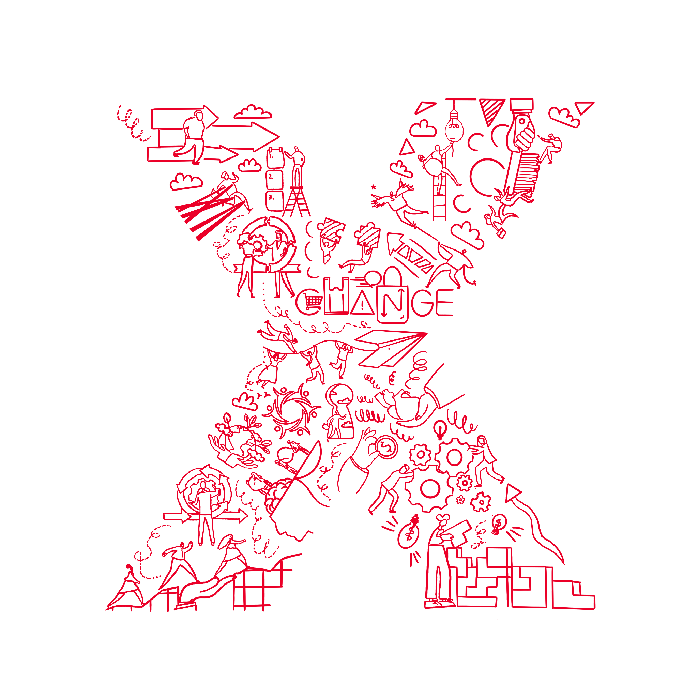
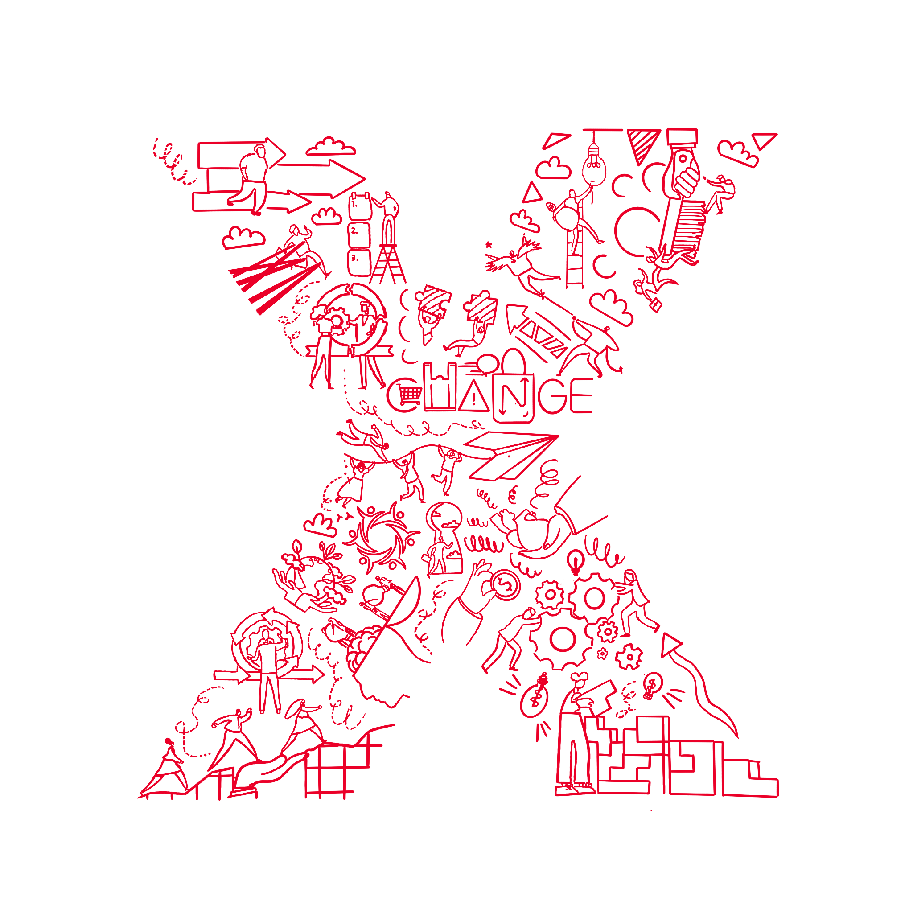

About TEDx
In the spirit of ideas worth spreading, TEDx is a program of local, self-organized events that bring people together to share a TED-like experience. At a TEDx event, TED Talks video and live speakers combine to spark deep discussion and connection. These local, self-organized events are branded TEDx, where x = independently organized TED event. The TED Conference provides general guidance for the TEDx program, but individual TEDx events are self-organized. (Subject to certain rules and regulations.)
About TED
TED is a nonprofit organization devoted to Ideas Worth Spreading. Started as a four-day conference in California 30 years ago, TED has grown to support its mission with multiple initiatives. The two annual TED Conferences invite the world's leading thinkers and doers to speak for 18 minutes or less. Many of these talks are then made available, free, at TED.com. TED speakers have included Bill Gates, Jane Goodall, Elizabeth Gilbert, Sir Richard Branson, Nandan Nilekani, Philippe Starck, Ngozi Okonjo-Iweala, Sal Khan and Daniel Kahneman.
The annual TED Conference takes place each spring in Vancouver, British Columbia. TED's media initiatives include TED.com, where new TED Talks are posted daily; TED Translators, which provides subtitles and interactive transcripts as well as translations from volunteers worldwide; the educational initiative TED-Ed. TED has established The Audacious Project that takes a collaborative approach to funding ideas with the potential to create change at thrilling scale; TEDx, which supports individuals or groups in hosting local, self- organized TED-style events around the world, and the TED Fellows program, helping world-changing innovators from around the globe to amplify the impact of their remarkable projects and activities.
Follow TED on Twitter, or on Facebook.
You can also visit the TEDxProgram website.